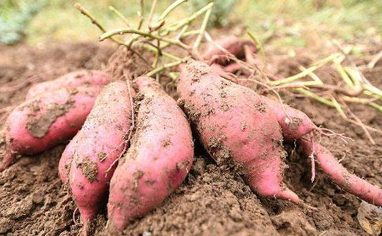

地瓜是红薯的俗称，因其为植物的块茎，非常容易保存。一年四季都可以吃到地瓜，但是应季的地瓜刚上市时，个体新鲜，色泽鲜亮而水分较多，营养流失也少，因此秋季是吃地瓜最好的时节。地瓜的营养价值很高，其富含多种碳水化合物以及膳食纤维、
地瓜不仅可以食用，还能够酿酒和制造酒精，不过人们平时最多的是将它煮熟后再吃。也可用来做菜，如拔丝红薯等。用地瓜熬粥，粥既甜又香，而且营养丰富。
地瓜的营养价值都有哪些呢？ 地瓜中含有多种人体需要的营养物质。每500克红薯约可产热能635千卡，含蛋白质11.5克、糖14.5克、脂肪1克、磷100毫克、钙90毫克、铁2克，胡
其中维生素B1、B2的含量分别比
它的含热量非常低，比一般
饮食中最具有抗癌作用的营养物质是β-胡萝卜素、维生素C和叶酸，而在地瓜中三者含量都比较丰富。一个小地瓜可提供2倍量的人体每天所需维生素A、三分之一量的每天所需维生素C和约50微克的叶酸；其中膳食纤维的含量高于一碗
常吃地瓜能使体内的叶酸维持正常水平，因此准备怀孕的女性可多吃地瓜，预防孕育宝宝时叶酸的缺失，地瓜的营养价值使很多人将它作为一种药食两用的食品。更有一些女性朋友为了驻颜美容，常常食用地瓜，而且更令人可喜的是，它吃得再多也不会胖，是很好的减肥食品。
营养价值红薯块根中含有60%-80%的水分，10%-30%的淀粉，5%左右的糖分及少量蛋白质、油脂、纤维素、半纤维素、果胶、灰分等，若以2.5Kg鲜红薯折成0.5Kg粮食计算，其营养成分除脂肪外，蛋白质、碳水化合物等含量都比大米、面粉高，且红薯中蛋白质组成比较合理，必需氨基酸含量高，特别是粮谷类食品中比较缺乏的赖氨酸在红薯中含量较高。此外红薯中含有丰富的维生素（胡萝卜素、维生素A、B、C、E），其淀粉也很容易被人体吸收。
维生素A素有“护眼小卫士”之称，如果人体缺乏它，眼睛感受弱光的能力便会下降，对黑暗环境的适应能力也会减退，严重时容易患上夜盲症。维生素A是由胡萝卜素转变而成的。除胡萝卜之外，红薯中也富含丰富的胡萝卜素，能提供丰富的维生素A，维生素A含量可高达40mg/100g鲜白地瓜，胡萝卜素被
人体吸收后，可以转化为维生素A。维生素A能维持正常的视觉功能。
缺乏维生素A是一个严重的
白地瓜所含纤维相当于米面的10倍，其质地细腻，不伤肠胃，能加快消化道蠕动，有助于排便，清理消化道，缩短食物中有毒物质在肠道内的滞留时间，减少因便秘而引起的人体自身中毒，降低肠道致癌物质浓度，预防痔疮和大肠癌。同时纤维素能吸收一部分
白地瓜含有丰富的粘液蛋白，这是一种多糖与蛋白质混合物，对人体有特殊的保护作用，能保持消化道、呼吸道、关节腔、膜腔的润滑和血管的弹性，由于这种物质可防止物质在动脉管壁上沉积而引起的动脉硬化，可以防止肝及肾脏等器官结缔组织的萎缩，可以减缓人体器官的老化，提高肌体免疫力。白地瓜还含有糖蛋白，具有很好的抗突变、降血脂和增强免疫力的作用。
白地瓜含钾量高，它可以减轻因过分摄取盐分而带来的弊端。钾还是保护心脏的重要因素。由于钾是碱性元素，白地瓜pH值为10.31，是生理碱性食品，有中和体液的作用。人体是一个酸碱平衡的机体，正常人的体液呈弱碱性，血液酸化时，人体四肢发凉，易感冒，伤口不易愈合，严重时可直接影响脑与神经的功能（如记忆力、思维能力减弱或精神疾病），且是许多慢性病发生的温床。因此在食物丰富的今天，不能光吃大鱼大肉、大米面等这一类酸性食品，适当食用白地瓜，有利于保持血液的酸碱平衡，对人们的健康、发育和智力开发都有益处。
白地瓜中有一种叫“去氧表雄酮”的生理活性物质，可以预防结肠癌和乳腺癌，对脑细胞和内分泌腺素的活力有很大的促进作用，故能延缓智力衰退和增加人体的抵抗力。含有较多的胡萝卜素、赖氨酸、植物纤维、去氢表雄酮，能预防肠癌和乳腺癌。
食疗价值红薯含有丰富的淀粉、维生素、纤维素等人体必需的营养成分，还含有丰富的镁、磷、钙等矿物元素和亚油酸等。这些物质能保持血管弹性，对防治老年习惯性便秘十分有效。遗憾的是，人们大都以为吃红薯会使人发胖而不敢食用。其实恰恰相反，红薯是一种理想的减肥食品，它的热量只有大米的1/3，而且因其富含纤维素和果胶而具有阻止糖分转化为脂肪的特殊功能。
红薯含有大量不易被吸消化酵素破坏的纤维素和果胶，能刺激消化液分泌及肠胃蠕动，从而起到通便作用。另外，它含量丰富的β-胡萝卜素是一种有效的抗氧化剂，有助于清除体内的自由基。实际上红薯还是一种理想的减肥食品。
药性功效红薯含有独特的生物类黄酮成分，能促使排便通畅，可有效抑制乳腺癌和结肠癌的发生；能提高消化器官的功能，滋补肝肾，也可以有效治疗肝炎和黄疸。
红薯蛋白质质量高，可弥补大米、白面中的营养缺失，经常食用可提高人体对主食中营养的利用率，使人身体健康、延年益寿。
红薯富含膳食纤维，具有阻止糖分转化脂肪的特殊功能；可以促进胃肠蠕动和防止便秘，用来治疗痔疮和肛裂等，对预防直肠癌和结肠癌也有一定作用。
红薯对人体器官黏膜有特殊的保护作用，可抑制胆固醇的沉积、保持血管弹性，防止肝肾中的结缔组织萎缩，防止胶原病的发生。